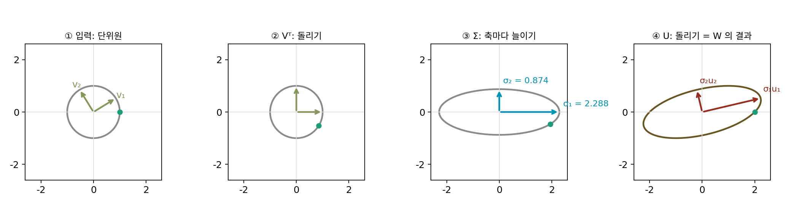

특잇값 분해: 행렬은 돌리고, 늘이고, 다시 돌린다
신경망의 한 층은 입력 벡터에 가중치 행렬 W를 곱한다. 이 곱셈이 입력 사이의 차이를 몇 배로 늘이는지 알면, 층 하나의 립시츠 상수를 알게 된다. Wx − Wy = W(x − y)이므로, 물음은 「길이 1인 입력을 W가 최대 몇 배로 늘이나」 하나로 줄어든다. 행렬의 칸을 들여다봐서는 답이 보이지 않는다. 가장 큰 칸이 답일까, 줄마다 칸을 더한 것이 답일까? 행렬이 길이 1인 입력 전체를 어디로 보내는지 직접 보면 어떨까?
역사: 학생 잡지에 실린 첫 증명
길이 1인 입력 전체, 곧 단위원(차원이 높으면 단위구)을 행렬이 어떤 모양으로 바꾸는지는 19세기 후반에 두 사람이 따로 답했다. 이탈리아의 에우제니오 벨트라미(Eugenio Beltrami)는 1873년 『이탈리아 대학생을 위한 수학 잡지(Giornale di Matematiche ad Uso degli Studenti Delle Università)』에 「쌍선형 함수에 대하여」를 실었다. 학생들이 두 벡터를 받아 수 하나를 내는 식(쌍선형 형식)에 익숙해지게 하려고 쓴 글이었다. 그는 양쪽 벡터를 각각 회전시키는 자유를 써서 행렬의 대각선 밖 칸을 모두 0으로 만들 수 있음을 보였다. 이듬해 프랑스의 카미유 조르당(Camille Jordan)이 같은 결과를 따로 냈다. 조르당의 방법은 지금 이 절이 가려는 방법과 같았다. 길이가 1인 두 벡터를 쌍선형 형식에 넣었을 때 그 값이 가장 커지고 가장 작아지는 곳을 찾는 것이다.
그 뒤 제임스 실베스터(1889)가 다시 발견했고, 에르하르트 슈미트(1907)가 이 분해를 함수의 세계(적분 방정식)로 넓히면서 「가장 가까운 저랭크 근사」 정리를 증명했다. 이 정리는 1936년 칼 에커트(Carl Eckart)와 게일 영(Gale Young)이 심리학 학술지 『사이코메트리카(Psychometrika)』에 「한 행렬을 더 낮은 랭크의 행렬로 근사하기」로 다시 내면서 널리 알려졌고, 지금은 흔히 에커트–영 정리라고 부른다. 수치해석학자 길버트 스튜어트(G. W. Stewart)는 1993년 이 역사를 정리하면서 그 정리는 슈미트의 것이라고 짚었다. 컴퓨터로 이 분해를 빠르고 안정되게 계산하는 방법은 1965년 진 골럽(Gene Golub)과 윌리엄 카핸(William Kahan)이 냈다.
원이 타원이 되기까지: W = [[2, 1], [0, 1]]
손으로 따라갈 수 있는 가장 작은 경우, 2×2 행렬로 시작한다. 첫째 줄이 (2, 1), 둘째 줄이 (0, 1)인 W를 골랐다. 대각선 밖에 0이 아닌 칸이 하나 있어 「어느 방향이 가장 늘어나나」가 칸만 봐서는 보이지 않고, 칸이 모두 작은 정수라 계산을 손으로 확인할 수 있다. 길이 1인 입력 몇 개를 넣어 보자.
| 입력 방향 | 입력 x | 출력 Wx | 늘어난 배율 ‖Wx‖ |
|---|---|---|---|
| 0° | (1, 0) | (2, 0) | 2.0000 |
| 45° | (0.7071, 0.7071) | (2.1213, 0.7071) | 2.2361 |
| 90° | (0, 1) | (1, 1) | 1.4142 |
| 135° | (−0.7071, 0.7071) | (−0.7071, 0.7071) | 1.0000 |
방향마다 배율이 다르다. 0.01° 간격으로 반 바퀴를 모두 훑으면, 가장 크게 늘어나는 방향은 31.72°이고 배율은 2.2882, 가장 적게 늘어나는 방향은 121.72°이고 배율은 0.8740이다. 두 방향은 정확히 90° 떨어져 있다. 단위원 전체를 넣으면 출력은 타원이 되고, 2.2882와 0.8740이 그 타원의 긴 반지름과 짧은 반지름이다.
더 놀라운 것은 이 변환이 세 단계로 쪼개진다는 점이다. 먼저 입력을 −31.72° 돌려 가장 크게 늘어날 방향을 가로축에 맞춘다. 다음에 가로축은 2.2882배, 세로축은 0.8740배로 늘인다. 마지막으로 결과를 13.28° 돌린다. 세 행렬을 곱하면 처음의 W가 정확히 나온다. 행렬 하나가 아무리 복잡해 보여도, 하는 일은 돌리기 · 축마다 늘이기 · 돌리기뿐이다.

이렇게 행렬을 「돌리기 Vᵀ, 축마다 늘이기 Σ, 돌리기 U」의 곱으로 쪼개는 것을 특잇값 분해 (행렬을 돌리기·늘이기·돌리기로 쪼개기 / singular value decomposition, SVD)라 하고, 늘이는 배율 σ₁ ≥ σ₂ ≥ … ≥ 0을 특잇값이라 한다. 행렬이 정사각형이 아니어도, 몇 차원이어도 늘 이렇게 쪼갤 수 있다.
오른쪽 식이 분해의 뜻을 한 줄로 말한다. 입력 쪽 축 vi는 W를 지나면 방향 ui로 가면서 σi배가 된다. 실제로 Wv₁ = (2.227, 0.5257)이고 σ₁u₁도 (2.227, 0.5257)이다. 특잇값을 구하는 손 계산 한 가지도 여기서 나온다. WᵀW는 돌리기를 지우고 늘이기만 두 번 남기므로, 그 고윳값 5.2361과 0.7639의 제곱근 2.2882와 0.8740이 특잇값이다. W 자신의 고윳값과 특잇값은 어떤 사이일까? 아래 문제 8에서 따져 본다.
ML에서: 큰 특잇값 몇 개가 행렬의 대부분이다
학습된 신경망의 가중치 행렬은 특잇값이 고르지 않은 경우가 많다. 앞의 몇 개가 크고 나머지는 작으면, 작은 특잇값을 지운 행렬로 원래 행렬을 거의 그대로 흉내 낼 수 있다. 에커트–영 정리는 이 흉내가 가장 잘 되는 방법을 알려 준다. 랭크(rank, 독립인 방향의 수)를 r로 묶었을 때 원래 행렬에 가장 가까운 행렬은, 특잇값 분해에서 큰 특잇값 r개만 남기고 나머지를 0으로 바꾼 것이다.
에드워드 후(Edward Hu)와 동료들이 2021년에 낸 LoRA(저랭크 적응, low-rank adaptation)는 이 생각을 파인튜닝에 쓴다. 큰 언어 모델의 가중치 전체를 고치는 대신, 고칠 양을 저랭크 행렬(가는 행렬 두 개의 곱)로 제한해 학습할 숫자를 크게 줄인다. 랭크를 하나 줄이면 오차가 얼마나 늘어나는지는 아래 문제 9에서 직접 잰다.
문제 7. 피자 반죽 밀기
반지름 10 cm인 둥근 반죽을 밀대로 밀었더니 긴 지름 30 cm, 짧은 지름 16 cm인 타원이 되었다. 반죽의 두께는 고르게 바뀌었다고 하자. (가) 두 축 방향으로 각각 몇 배 늘어났는가? 넓이는 몇 배가 되었는가? (나) 두께는 몇 배가 되었는가? (다) 위젯 1의 「본문의 W」에서 넓이 배율을 읽고, W의 칸으로 계산한 어떤 값과 같은지 찾아라.

(가)는 긴 쪽이 30/20 = 1.5배, 짧은 쪽이 16/20 = 0.8배예요. 넓이는 둘을 더해서… 아니, 평균 내서 1.15배?

원의 넓이와 타원의 넓이를 직접 계산해 볼까요? 타원의 넓이는 π × 긴 반지름 × 짧은 반지름이에요.

π × 15 × 8 = 120π, 원래가 100π니까 1.2배예요. 1.5 × 0.8 = 1.2네요. 더하거나 평균 내는 게 아니라 곱하는 거였어요. (나)는 반죽 양이 같으니까 두께는 1/1.2 = 0.83배고요.

(다)는 위젯에서 넓이 배율이 2.0000이야. W의 행렬식이 2 × 1 − 1 × 0 = 2니까 같아. 특잇값의 곱이 행렬식의 크기구나.

왜 그럴까요? 세 단계 가운데 넓이를 바꾸는 단계는 어느 것이죠?

돌리기는 넓이를 안 바꾸니까 늘이기 Σ만 넓이를 바꿔요. 가로 σ₁배, 세로 σ₂배니까 넓이는 σ₁σ₂배. 선형대수에서 행렬식을 「부피가 몇 배 되나」로 배웠는데, 그걸 특잇값으로 쪼개서 본 거예요.

밀대로 한쪽을 밀 때 반죽이 다른 쪽으로는 줄어드는 게, 두 배율의 곱이 반죽 양으로 묶여 있어서였네요.
문제 8. 고윳값이 모두 1인데
밀기 행렬 S = [[1, 1], [0, 1]]은 점 (x₁, x₂)를 (x₁ + x₂, x₂)로 옮긴다. (가) S의 고윳값은? (나) S가 길이 1인 입력을 가장 크게 늘이는 배율은 얼마이고, 어느 방향에서인가? (다) 오른쪽 위 칸을 2, 5, 10으로 키우면 가장 큰 특잇값은 어떻게 되는가? (풀어 본 뒤 위젯 1의 「문제 8 불러오기」로 확인해 보자.)
고윳값은 대각선이 1, 1이니까 둘 다 1이에요. 고윳값이 1이면 늘이지도 줄이지도 않으니까, 가장 큰 배율도 1이겠죠.
입력 (0, 1)을 넣어 보세요. 출력의 길이는요?

(1, 1)이니까 길이가 √2 = 1.414예요. 1보다 크네요. 고윳값은 1인데 왜 늘어나죠?
고윳값은 방향이 안 바뀌는 입력에 대한 배율이야. S의 고유벡터는 (1, 0) 하나뿐이고 그 방향은 정말 1배야. 그런데 다른 방향은 옆으로 밀리면서 길어져. 특잇값으로 계산하면 1.618과 0.618이고, 1.618은 황금비 (1 + √5)/2야. 가장 크게 늘어나는 입력 방향은 58.28°.

두 특잇값의 곱은요? 그리고 (다)는요?

곱은 1.618 × 0.618 = 1, 행렬식과 같아요. (다)는 2.414, 5.193, 10.099로 칸을 따라 커지는데 고윳값은 여전히 1, 1이에요. 고윳값만 보면 「아무것도 안 늘이는 행렬」로 보이는데 실제로는 열 배 넘게 늘여요. 늘이는 배율을 물을 때는 고윳값이 아니라 특잇값을 봐야 해요. 대칭 행렬이면 둘이 같아서 헷갈리기 쉬웠던 거고요.

층 하나가 입력을 얼마나 키우는지 보려고 고윳값을 찍어 보면 안 되겠네요. 시험 평균 점수만 보고 반 분위기를 판단했다가, 몇몇이 엄청 튀는 걸 놓친 거랑 비슷해요.
문제 9. 랭크를 줄이면 얼마나 틀리나
랭크 2인 6×6 행렬에 작은 노이즈를 더한 행렬 A(씨앗 고정)의 특잇값은 9.2593, 3.0407, 0.2501, 0.2130, 0.1195, 0.0378이다. (가) 큰 특잇값 r개만 남긴 근사(r = 1, 2, 3)의 오차를 스펙트럼 노름(오차 행렬이 길이 1인 입력을 가장 크게 늘이는 배율)으로 재면 각각 얼마인가? (나) 랭크 2 근사를 저장하려면 숫자가 몇 개 필요한가? 원래는 36개다. (다) 같은 랭크 2라도 앞의 두 열만 남기거나, 무작위로 고른 2차원 공간에 사영하면 오차는?
특잇값을 하나 남기면 9.26만큼은 맞췄으니까, 오차는 남은 특잇값을 다 더한 3.66쯤 아닐까요?
오차 행렬 A − Ar을 특잇값 분해로 쓰면 어떤 모양이죠?
아, A의 특잇값 분해에서 지운 특잇값들만 남은 꼴이에요. 그 행렬이 가장 크게 늘이는 배율은 남은 것 가운데 가장 큰 특잇값이니까, r = 1이면 3.0407, 2면 0.2501, 3이면 0.2130이요. 계산해 보니 딱 맞아요. 더하는 게 아니었어요.
(나)는 랭크 2면 왼쪽 축 6칸짜리 두 개, 오른쪽 축 6칸짜리 두 개, 특잇값 둘이라 26개야. 36개 가운데 26개로 오차 0.25. (다)는 앞의 두 열만 남기면 오차가 7.95이고, 무작위 2차원 공간 1000개 가운데 가장 좋은 것도 2.66이야. 특잇값으로 자른 것과 비교가 안 돼.
1000번 시도해서 가장 좋았던 것도 0.25에 한참 못 미쳤죠. 그 까닭은요?
에커트–영 정리가 랭크 2인 행렬 가운데 가장 가까운 것이 특잇값으로 자른 것이라고 보장하니까요. 무작위로 아무리 많이 찾아도 그보다 나을 수 없어요. 그리고 셋째 특잇값부터 뚝 떨어지니까 랭크 2에서 멈추는 게 알맞아요.
LoRA가 랭크를 4나 8처럼 작게 잡아도 되는 이유가 이거구나. 고칠 양의 특잇값이 앞의 몇 개에 몰려 있다면요. 요약 과제에서 핵심 문장 두 개만 남겨도 내용이 거의 다 전해지는 글이 있고, 그렇지 않은 글이 있는 것처럼요.